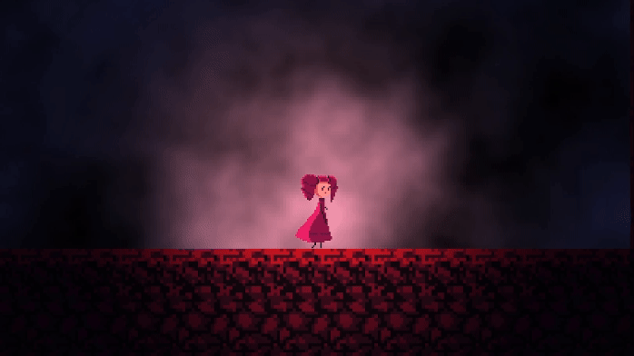

Willkommen auf meiner Website!
Hier stelle ich meine letzten Projekte vor und zeige, was mich gerade begeistert.
Die Website zum Beispiel hab ich auch selbst mit simplem HTML/CSS gebastelt und per Github Pages ge-hosted ^-^.
Hier stelle ich meine letzten Projekte vor und zeige, was mich gerade begeistert.
Die Website zum Beispiel hab ich auch selbst mit simplem HTML/CSS gebastelt und per Github Pages ge-hosted ^-^.
Mein Cellular Automata den ich mithilfe GodotEngine's GDExtension für C++ implementiert habe.
Die Regeln sind simple: Bei Acht Nachbarn einer Zelle wird, wenn 4 oder weniger aktive Nachbarn, die Zelle deaktiviert. Andernfalls bleibt sie aktiv.
Ich generiere auch anfangs Random Noise anhand eines Threshold-wertes. In diesem Fall 0,45. Noise ändert die Verteilung der Räume und je größer der Threshold, desto kleiner der Anteil Aktiven Zellen.
Das hier ist ein 512x512px Grid. Mit Godot's Scripting language war nur 128x128 möglich. Mit C++ aber bis zu 1024x1024.
Die Implementation in C++ gab einen ungefähren 5-fachen Speedboost.
In dem Modul Game-Art wurden wir in die Prozesse der Game-Art Branche eingeführt. Ich habe im Laufe des Moduls meinen Character entwickelt und erste Assets angefertigt.
Ich wollte meinen Character aber auch gerne in Action sehen und habe daher diese Scene mit meinen Assets in Godot verwirklicht.

Erfahrung mit Three.js durch das Modul Computergrafik und ergänzende Kenntnisse durch mein Gamedev Hobby
Hier ist ein Video meiner Unterwasser-Scene zu sehen mit Particle Bubbles, Orbital Camera Controls, Heightmap Displacement und mehr.
In dem Modul Computer Animation haben wir im Team eine Animation erstellt.
Der Titel "The Legal Trap" kommt von einer bestimmten Serie von Schachzügen, die ein schnelles Ende zur Folge haben.
Ich war mitunter zuständig für Teile der Animation, Modelling, Compositing, sowie die Produktions-Pipeline und ganz, ganz viel Organisatorisches :D.
Es war wirklich spanned zum ersten Mal mit anderen an einem so großen Projekt zu arbeiten!
Herausfordern war vor allem das parallele Arbeiten und unser unterschiedlicher Wissensstand. Letztendlich waren wir aber doch sehr stolz auf unsere erste Animation in Blender.
Ich bin 2001 in Nordrhein-Westfalen geboren und studiere seit 2022 Medieninformatik in Stuttgart. Ich bin an sehr vielen Bereichen der Medien interessiert und besonders in Verbindung zu meinen Hobbies!
Meine Hobbies: Gamedev, Webdev, Animation, Illustration und 3D Modelling.
E-Mail: joshua.jung@kjung.net